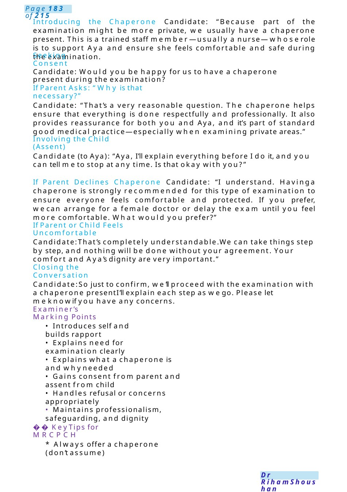

Com Chaprone
Station Title: Use of Chaperone During Intimate Examination Setting: Paediatric outpatient clinic
Scenario Summary
Station Title: Use of Chaperone During Intimate Examination Setting: Paediatric outpatient clinic
Full Original Scenario

Com Chaprone
Station Title: Use of Chaperone During Intimate Examination
Setting: Paediatric outpatient clinic
Role Player: Mother of a 12-year-old girl (Aya)
Candidate Role: ST3 Paediatric doctor asked to examine the child for abdominal pain, which may require an intimate examination (e.g., abdominal ±genital exam)
Your Tasks:
- Explain the need for examination
- Introduce and explain the role of a chaperone
- Address concerns sensitively
- Obtain informed consent from parent and assent from child
Opening the Conversation
Candidate:
Hello, I’m Dr. one of the paediatric doctors. I understand Aya has been having abdominal pain. I’dlike to ask a few more questions and then examine her to better understand what’s going on. Is that okay?”
Explaining the Need for Examination Candidate: To properly assess the cause of her pain, I’ll need to examine her tummy. Depending on what I find, I mayalso need to check the area around her lower abdomen. I will always explain everything before I do it.

Introducing the Chaperone Candidate: “Because part of the examination might be more private, we usually have a chaperone present. This is a trained staff member—usually a nurse—whoserole is to support Aya and ensure she feels comfortable and safe during the examination.
Seeking Consent
Candidate: Would you be happy for us to have a chaperone present during the examination?
If Parent Asks: “Why is that necessary?”
Candidate: “That’s a very reasonable question. The chaperone helps ensure that everything is done respectfully and professionally. It also provides reassurance for both you and Aya, and it’s part of standard good medical practice—especially when examining private areas.”
Involving the Child (Assent)
Candidate (to Aya): “Aya, I’ll explain everything before I do it, and you can tell meto stop at any time. Is that okay with you?”
If Parent Declines Chaperone Candidate: “I understand. Havinga chaperone is strongly recommended for this type of examination to ensure everyone feels comfortable and protected. If you prefer, wecan arrange for a female doctor or delay the exam until you feel more comfortable. What would you prefer?”
If Parent or Child Feels Uncomfortable
Candidate:That’s completely understandable.We can take things step by step, and nothing will be done without your agreement. Your comfort and Aya’s dignity are very important.”
Closing the Conversation
Candidate:So just to confirm, we’ll proceed with the examination with a chaperone presentI’ll explain each step as wego. Please let meknowif you have any concerns.
Examiner’s Marking Points
- Introduces self and builds rapport
- Explains need for examination clearly
- Explains what a chaperone is and whyneeded
- Gains consent from parent and assent from child
- Handles refusal or concerns appropriately
- Maintains professionalism, safeguarding, and dignity
Key Tips for MRCPCH
- Always offer a chaperone (don’t assume)

Eczemadischarge from Derma Clinic
- Use clear, non-threatening language
- Involve the child appropriately based on age
- Respect cultural sensitivity (important in places like Qatar)
- Document chaperone uses in real practice
talk to her about no need to follow with the consultant.
Reassure the mother that her daughter is nowstable and there is no need to follow the consultant.
All doctors here are well qualified and follow the sameguidelines in managing patients. If at any time she develops any deterioration, wecan arrange a meeting with the consultant.
Indications for referral: if not improved onemollient and need steroid, if eczemain the face, affecting sleep or school attendance or psychologically or even onthe family, if infected or diagnosis uncertain.
Cause: unknown but maybedryness of skin which reacts to certain trigger, or maybe genetic or over stimulation of immunedisease.
It ’s a treatable, controllable disease not curable ... it varies from child to another, some grow of it by the age of 16, others maycontinue to adult life.
Eczema advice and Alarming Signs (increased size – redness – infection - fever - being unwell)
Herbal medicine mayhelp, but wedo not knowthe ingredients of it, and it maycause unpredictable.